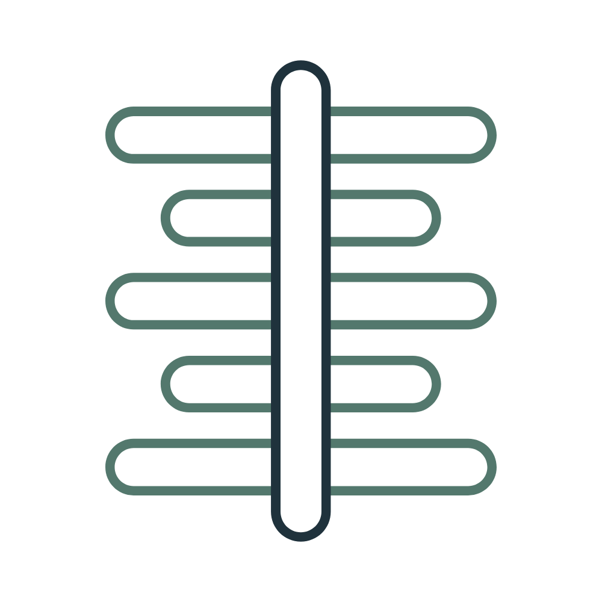
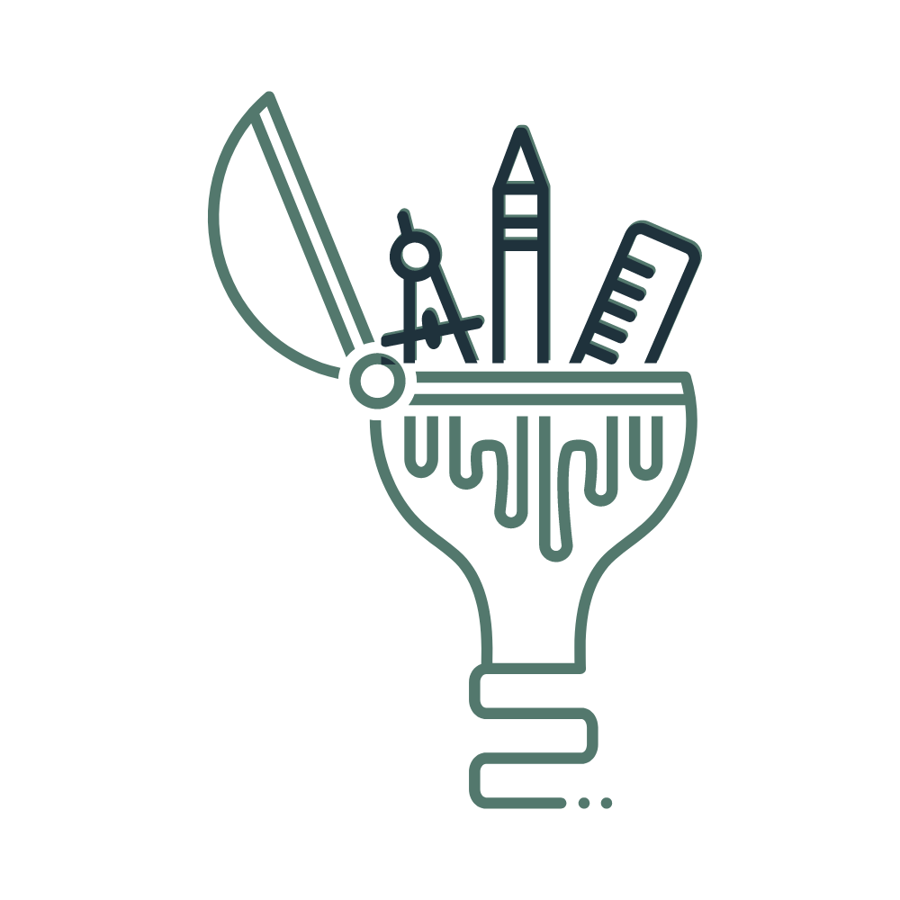
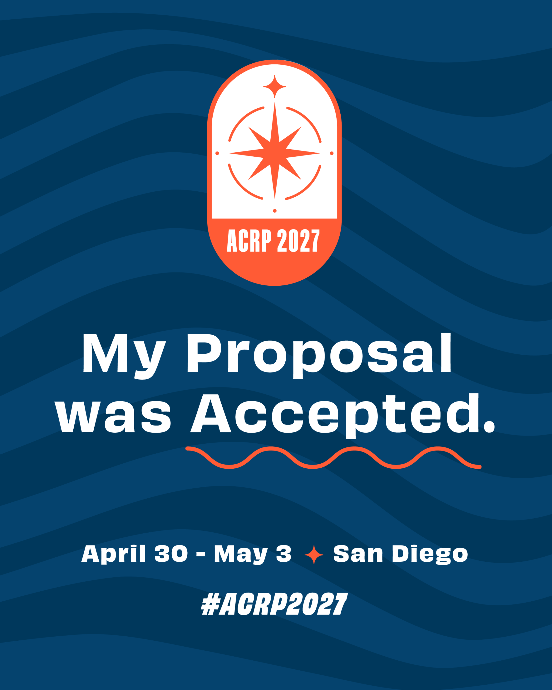
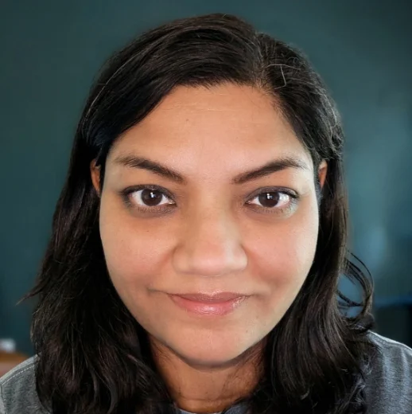

Align. Design. Deliver.

Goal Alignment
We assess your learners' capabilities against your developmental goals to identify and target knowledge gaps to improve capacity for real-world impact.

Learning Design
Using the gaps identified, we design targeted learning solutions, including competency requirements, curricula, and professional development pathways.
Implementation
We partner with you to deliver engaging, outcomes-based training curated for your organization's needs, with performance indicators to measure impact.
Courses and case studies
Select a project to see the full case study.
Shared Services Onboarding
A global insurance firm moved to a shared services model. Over two years, built onboarding for three new roles and refresher training for two departments. One refresher reached about 600 employees globally with 92% completion.

Public Health and Dementia Series
The Alzheimer’s Association needed public health training on dementia for practitioners and students. Designed and built a three-module series in Rise and Storyline, including a custom learner journal. Over 90% of learners reported increased knowledge, and the work led to a new module in the series.
Emergency Response Training
The pandemic exposed gaps in emergency readiness, and healthcare professionals needed training fast. Led a team of developers to build more than 20 courses in three months, including a hands-on SALT triage simulation. Courses averaged a 4.6 out of 5 rating.
Caregiver as a Navigator
Family caregivers of people with dementia must navigate complex systems on their own. Led the learning strategy and a team building a 30-lesson microlearning course in Rise and Storyline. It is now being evaluated in an NIH-funded randomized study of 270 caregivers.
Health Effects of Climate Change on Children
Pediatricians needed guidance on talking with families about climate risks to children’s health. Partnered with four pediatricians to build a Rise and Storyline CME course built around five questions and a motivational interviewing framework. The AAP approved it for CME credit, and it launched in June 2023.
Vaccine Confidence for Nursing Education
Nursing faculty needed to coach students through emotionally charged vaccine conversations, in person and on social media. Designed a Rise and Storyline course with Vyond scenarios built on motivational interviewing. Since launch, it has been adopted by three academic and clinical programs.
Facilitation Skills for Lifestyle Coaches
New lifestyle coaches needed a fast, engaging foundation in facilitation. Designed an interactive Storyline course built around a “guide for the journey” metaphor and nine facilitation techniques. Launched in 2023, it is still in use and has expanded to additional programs.
Contributions to the field

Beyond Onboarding: Innovating Continuous Learning for Clinical Research Teams
The Balancing Act of Training Through Organizational Change
Read the article →Partnering to Build Dementia Training for the Current and Future Public Health Workforce
Presented on behalf of the Alzheimer’s Association.

As the Research Program Director at one of the largest hospital systems in Georgia, I built a highly effective clinical research program by developing a team of over 80 professionals. That's what got me hooked on performance improvement through learning design.
Since then I've created educational programs for academic institutions like Emory University's School of Nursing and School of Public Health, the University of Virginia, non-profits like the Alzheimer's Association, and a global commercial insurance company.